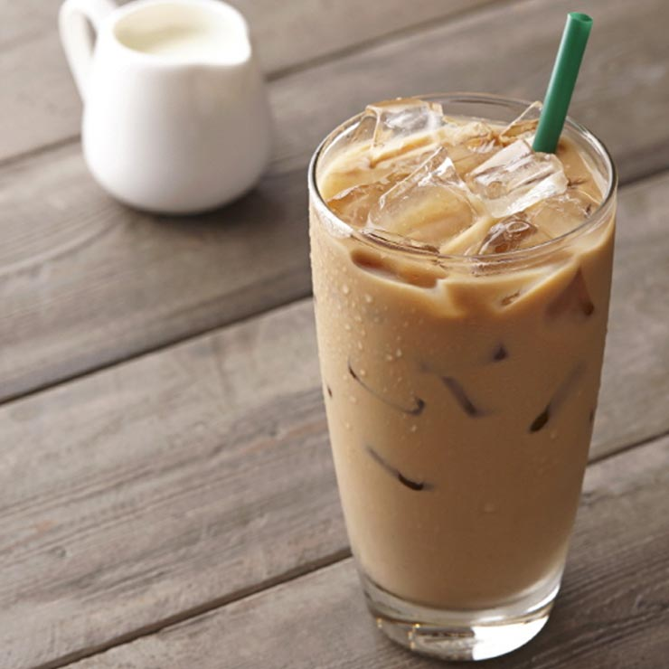

| 홈>메뉴>커피> 카페라떼 | ||||
|  | ||||
카페라떼Cafe Latte |
||||
| 에스프레소 샷과 시원한 우유와 얼음으로 고소한 음료. | ||||
| 제품 영양 정보 | Tall(톨) / 355ml (12floz) | |||
|
1회 제공량 (kcal) 포화지방 (g) 단백질 (g) |
110 3.5 6 |
나트륨 (mg) 당류 (g) 카페인 (mg) |
75 8 75 |
|
| 알레르기 유발요인 : 우유 | ||||
|
풍부하고 진한 농도의 에스프레소에 시원한 우유를 더하여 우유의 고소함과 에스프레소의 강렬함이 차가운 얼음과 어우러져 시원하게 즐기실 수 있는 커피 입니다. 옥탑방만의 전용 두유를 사용하여 나만의 음료를 즐기세요! 옥탑방 두유는 커피와 부드러운 조화를 이룹니다. Soy Caffe Latte 두유 카페 라떼(Hot & Iced) |
||||